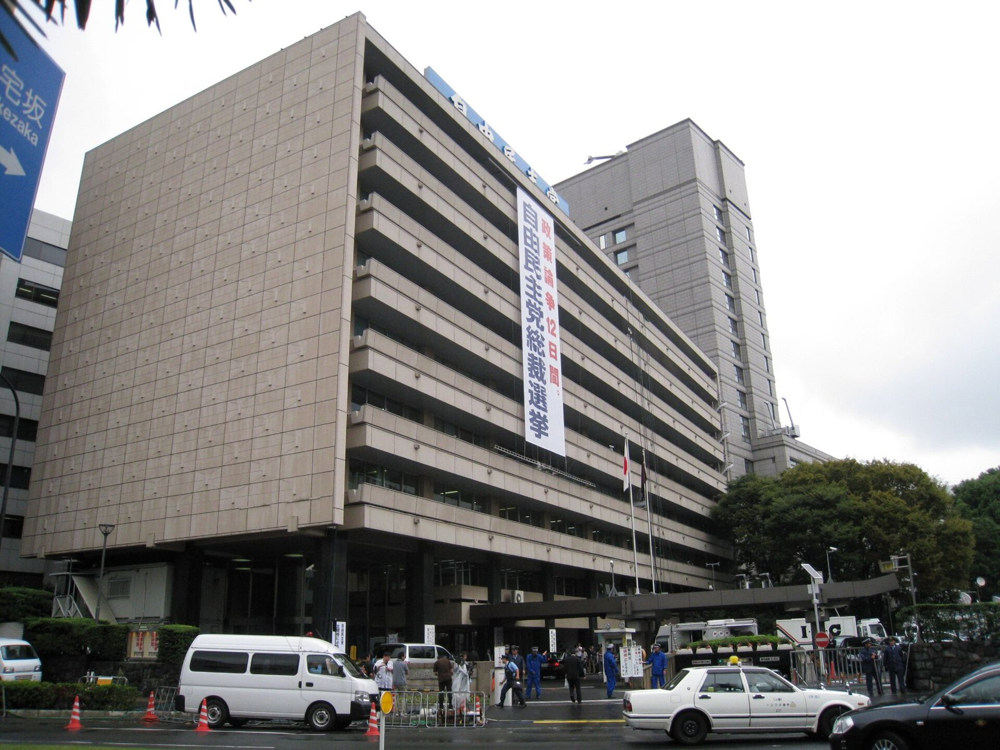

[한일수교 60년①] 김대중의 2006년 예언, 2026년 2월 자민당 316석으로 돌아왔다
2026년 2월 8일 자민당 316석, 1955년 창당 이래 최대… 개헌 발의선 310석을 혼자 넘었다
참정당은 3석에서 15석, 입헌민주당과 공명당은 합당해 49석으로 123석을 잃었다
"일본 민주주의는 밖에서 왔다"는 20년 전 진단이 의석표로 확인됐다
AI경세제민=김갑봉 기자 | 2006년 10월 11일 김대중 전 대통령이 전남대에서 강연했다. 일본 민주주의는 2차 세계대전 뒤 밖에서 주어졌고, 그래서 일본 안에는 민주주의를 스스로 쟁취한 세력이 없다고 했다. 20년이 지난 2026년 2월, 일본 유권자는 자민당에 316석을 줬다.

※ 이 연재는 2025년 인천투데이에 실린 「한일수교 60년」 연재를 잇는다. 논지는 이어받되 수치와 사실은 2026년 10월 기준으로 다시 확인해 썼다.
2026년 2월 8일, 숫자부터
가. 316석
2026년 2월 8일 제51회 일본 중의원 총선거가 있었다. 465석 전체를 다시 뽑았다. 자민당이 316석을 얻었다. 125석 늘었다. 1955년 창당 이래 가장 많은 의석이다. 투표율은 비례대표 기준 56.25%로 지난 총선보다 2.4%포인트 올랐다.
자민당은 연립 상대인 일본유신회와 함께 465석 가운데 352석을 쥐었다. 2월 18일 특별국회에서 다카이치 사나에 총리가 354표로 재지명됐다.
나. 참정당 15석
참정당은 15석을 얻었다. 12석 늘었다. 2025년 7월 참의원 선거에서 1석에서 14석으로 뛴 흐름이 중의원에서도 이어졌다.
다. 야당이 사라졌다
입헌민주당과 공명당이 합당해 중도개혁연합을 만들었다. 49석을 얻었다. 두 당의 선거 전 의석을 합친 것보다 123석 적다.
일본유신회 36석, 국민민주당 28석, 신당 팀미라이 11석, 일본공산당 4석, 레이와신선조 1석, 일본보수당 0석이다. 보수당은 3석을 모두 잃었다.
예언 하나: 뿌리 없는 민주주의
김대중의 진단은 두 갈래였다.
첫째, 일본 민주주의가 점령군의 손에서 왔기 때문에 일본 사회 안에 민주주의를 지켜 낼 자생적 주체가 없다는 것이다.
2025년 7월 참정당의 급등이 그 진단의 1차 확인이었다. 참정당은 연합군 총사령부가 초안을 잡은 헌법을 바꾸겠다고 했고, 외국인의 토지 매입과 기반시설 취득을 제한하겠다고 했다. 무소속 유권자 가운데 약 22%가 참정당을 찍었다. 같은 선거에서 자민당은 개선 63석 가운데 28석에 머물렀다. 당시 이시바 시게루 총리 지지율은 22.9%로 최저치였고, 사퇴해야 한다는 응답이 51.6%였다.
2026년 2월의 확인은 방향이 반대로 보이지만 내용은 같다. 유권자는 극우 신당으로 흩어진 뒤 다시 자민당으로 모였다. 두 번 다 선택지가 보수 안에 있었다. 2026년 총선에서 제1야당 자리에 오른 것은 중도개혁연합이지만 49석이다. 자민당 316석에 맞설 수 있는 숫자가 아니다.
정권을 교체할 수 있는 야당이 서지 않는다는 점에서 2025년과 2026년은 같은 사실을 말한다.
개헌 발의선 310석
가. 중의원은 넘었다
일본 헌법 개정은 양원에서 각각 3분의 2 이상 찬성으로 발의하고 국민투표에서 과반을 얻어야 한다. 중의원 3분의 2는 310석이다. 자민당은 316석으로 혼자 그 선을 넘었다.
다카이치 총리는 2월 9일 기자회견에서 가능한 빨리 국민투표에 부치겠다고 했다. 자민당은 선거 공약에서 자위대를 헌법에 명기하는 개정을 설명하겠다고 했다.
나. 참의원과 여론이 남았다
참의원에서는 자민당과 유신회가 과반에 미치지 못한다. 3분의 2는 더 멀다. 요미우리신문 계열 연구자 와타나베 쓰네오는 참의원 3분의 2 확보를 "극히 어렵다"고 평가했다.
자민당 안에서도 9조를 어떻게 고칠지 합의가 없다. 아베 신조 전 총리의 2017년 안은 전력 보유를 금지한 2항을 남기고 자위대를 더하는 방식이었다. 강경파는 2항을 지우고 자위대를 군대로 쓰자고 한다. 국민민주당과 참정당도 개헌에는 찬성하지만 초안이 서로 다르다.
여론도 뒷받침이 아니다. 2025년 5월 NHK 조사에서 9조 개정이 필요하다는 응답이 34%, 필요 없다가 28%, 의견 없음이 33%였다. 2026년 총선 출구조사에서 개헌을 최우선 쟁점으로 꼽은 유권자는 3%였다. 물가와 경제정책을 꼽은 응답이 49%였다.
다. 그래서 무엇이 남는가
316석은 개헌을 가능하게 한 숫자가 아니라 개헌을 상시 의제로 만든 숫자다. 발의 자체가 중의원에서 막히지 않는다는 사실만으로도 논의의 기본값이 바뀐다.
다카이치 내각 지지율은 출범 첫 주 70%를 넘었고 2026년 6월 50%대로 내려와 최저치를 기록했다. 2026년 3월 19일 방미해 도널드 트럼프 미국 대통령과 회담했다. 경제 성과를 앞세우는 쪽으로 무게가 옮겨 간다는 평가가 나온다. 아베 전 총리도 개헌을 장기 과제로 두고 경제를 앞세웠다.
예언 둘: 사죄 없는 이웃
김대중의 두 번째 진단은 독일식 반성이 없으면 일본은 아시아 이웃과 갈등을 겪게 된다는 것이었다.
2026년의 동북아는 그 문장대로 돌아갔다. 중국 외교부는 2026년 9월 브리핑에서 일본 총리의 직함을 뺐다. 같은 해 1월 6일에는 일본에 대한 희토류 수출을 금지했다. 한국과는 1월 5일 정상회담이 90분 이어졌다.
일본이 동북아에서 고립되는 과정에 한국만 남았다. 이 연재의 ⑰편에서 다룬 구도다.
한국 민주주의라는 대조항
김대중의 진단이 일본 민주주의를 밖에서 온 것으로 본다면, 그 대조항은 한국이다.
1898년 만민공동회, 1919년 3·1운동, 1960년 4월혁명, 1980년 광주, 1987년 6월항쟁, 그리고 촛불이 있었다. 1998년 여야 사이 첫 평화적 정권교체가 있었다. 모두 안에서 나왔다.
이 대조는 자부심의 근거이기도 하지만 더 중요한 것은 쓰임이다. 안에서 만든 제도는 안에서 고칠 수 있다. 밖에서 받은 제도는 밖의 사정이 바뀔 때 흔들린다. 2026년 일본 정치의 진폭이 그 차이를 보여 준다.
그러면 한국은
가. 상대를 정확히 볼 것
316석을 쥔 자민당과 상대한다는 뜻을 분명히 해야 한다. 상대의 국내 정치가 불안정해 양보를 받아 내기 쉬운 국면은 끝났다. 2025년의 일본은 소수 여당이었고 2026년의 일본은 단독 개헌 발의선을 넘긴 여당이다.
나. 레드라인을 문서로 둘 것
과거사에서 물러서지 않는 선은 합의 문서에 남겨야 한다. 지지율이나 선거 결과로 흔들리지 않는 형태여야 한다. 1998년 김대중-오부치 공동선언이 왜 아직도 기준으로 인용되는지가 답이다.
다. 협력은 품목으로 할 것
안보와 과거사를 한 묶음으로 다루면 둘 다 막힌다. 공급망, 인구, 에너지, 항공처럼 양쪽에 계산이 서는 품목부터 따로 떼어 진행하는 쪽이 현실적이다.
20년 뒤에 확인된 문장
2006년의 강연은 예측이 아니라 구조 진단이었다. 예측이 맞은 것이 아니라 구조가 그대로 있었다.
일본 민주주의에 자생적 주체가 없다는 진단은 2025년 극우 신당의 급등으로 한 번, 2026년 자민당 316석으로 또 한 번 확인됐다. 두 결과는 반대로 보이지만 같은 결핍을 가리킨다. 정권을 바꿀 수 있는 세력이 보수 바깥에 서지 못한다는 것이다.
한국이 할 일은 그 구조를 탓하는 것이 아니다. 그 구조를 전제로 협상하는 것이다.
참고문헌
일본 총무성, 제51회 중의원 의원 총선거 개표 결과, 2026년 2월
일본 국회 특별국회 총리 지명 투표 결과, 2026년 2월 18일
NHK, 헌법 개정 관련 여론조사, 2025년 5월
NHK, 제51회 중의원 총선거 출구조사
인천투데이, 「한일수교 60년 ①」, 2025년 8월
※ 이 기사는 AI 프로그램 클로드를 활용해 작성했습니다.
관련기사
- [한일수교 60년②] 선언을 잇겠다는 말은 받았고, 새 선언은 없었다
- [한일수교 60년③] 1945년에 정해진 조건, 2026년에도 청구서는 워싱턴에서 온다
- [한일수교 60년④] 대일 수출 비중 3.4%, 1989년의 6분의 1로 내려왔다
- [한일수교 60년⑤] 등록 피해자 240명 가운데 다섯 분이 남았다, 평균 95.8세다
저작권자 © AI경세제민 무단전재 및 재배포, AI학습 및 활용 금지